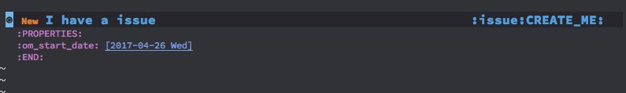
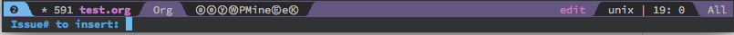
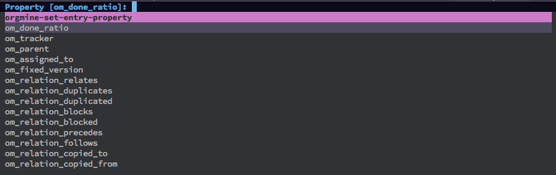
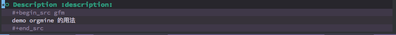

(orgmine :location (recipe
:fetcher github
:repo "kametoku/orgmine"))
(setq orgmine-tags '((update-me . "UPDATE_ME")
(create-me . "CREATE_ME")
(refile-me . "REFILE_ME")
(project . "project")
(tracker . "tracker")
(versions . "versions")
(version . "version")
(issue . "issue")
(description . "description")
(journals . "journals")
(journal . "journal")
(attachments . "attachments")
(wiki . "wiki")))
${id} : issue id${subjcet} : issue subject${count} : journal serial number${author}${created_on}${name} : user id${firstname}${lastname}${identifier}
;; my redmine config
(setq orgmine-servers
'(("demo" ;; om_server name
(host . "http://localhost:10082") ;; must
(api-key . "c1baa236cc0fbdbb5ac42171560b712bade517c6") ;; must
(issue-title-format . "[[redmine:issues/%{id}][#%{id}]] %{subject}")
(journal-title-format . (concat
"[[redmine:issues/%{id}#note-%{count}][J#%{count}]]"
" %{author}@%{created_on}"))
(version-title-format . (concat
"[[redmine:versions/%{id}][V#%{id}]]"
" %{name}"))
(tracker-title-format . "%{name}")
(project-title-format . (concat
"[[redmine:projects/%{identifier}][%{identifier}]]"
" %{name}"))
(user-name-format . "%{firstname} %{lastname}"))))
為了要使用 orgmine 產生 org file property 的功能，這兩行 PROPERTY 必需先加:
#+PROPERTY: om_server demo #+PROPERTY: om_project 1
接著才 M-x orgmine-insert-template
#+SEQ_TODO: New InProgress Feedback | Closed Resolved Rejected #+PROPERTY: om_server demo #+PROPERTY: om_project 1:orgmine #+PROPERTY: om_status_ALL 1:New 2:Closed 3:InProgress 4:Feedback 5:Resolved 6:Rejected opne locked closed #+PROPERTY: om_trackers_ALL #+PROPERTY: om_assigned_to_ALL 1:Redmine\ Admin 5:hpy\ s #+PROPERTY: om_done_ration_ALL 0 10 20 30 40 50 60 70 80 90 100
#+PROPERTY: om_me 5:hpy #+PROPERTY: om_default_todo New




journal 在 submit 後會自動集中到 Journals 的 headline 下。
p.s. 完成率是 headline 的 property
3 個都一樣要 cursor 在 issue headline 下才有用，沒什麼差別
p.s. 每個 issue 在同一個檔案只會出現一次，sync 時若有重覆的會 retrieved
Track subtree
M-x orgmine-insert-tracker M-x orgmine-sync-subtree-recursively
Version subtree
M-x orgmine-insert-version M-x orgmine-sync-subtree-recursivele
M-x orgmine-show-______
UPDATE_ME 的 tag，需自己加。orgmine-insert-template 產生的錯字要改:
=om_trackers_ALL= -> =om_tracker_ALL=
Demo